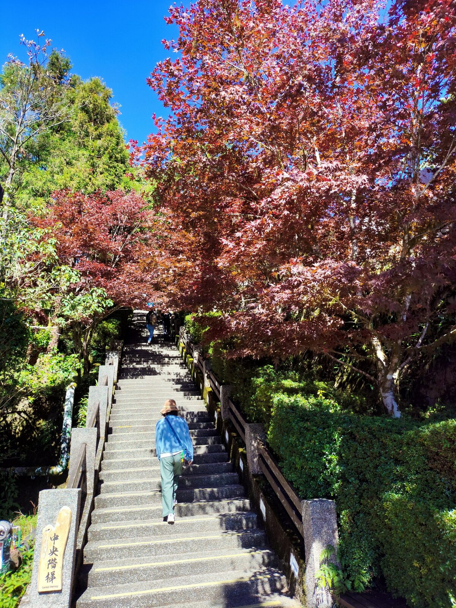
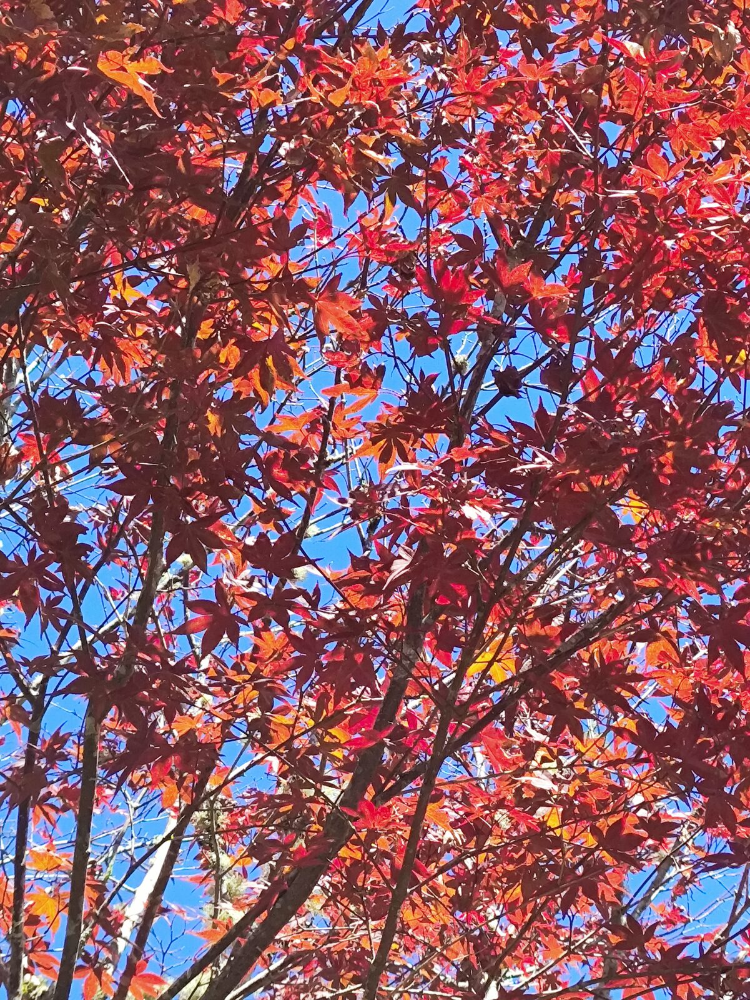
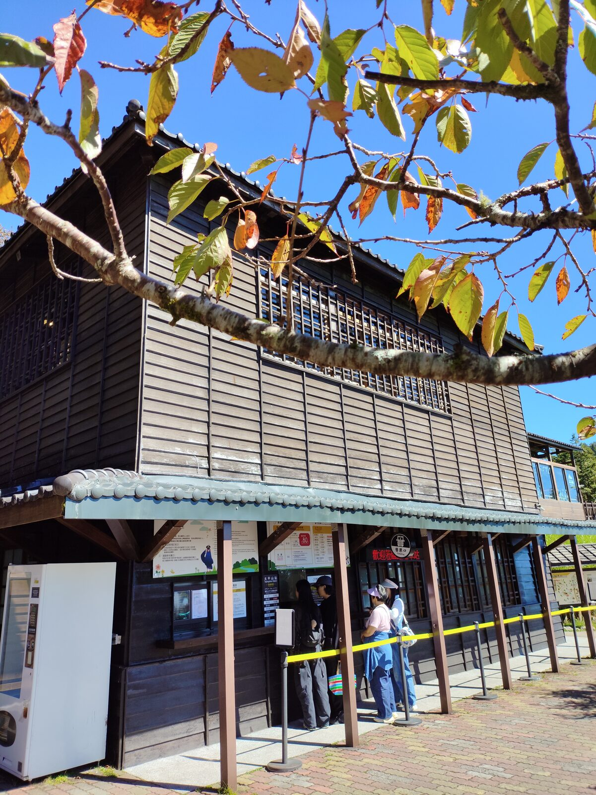
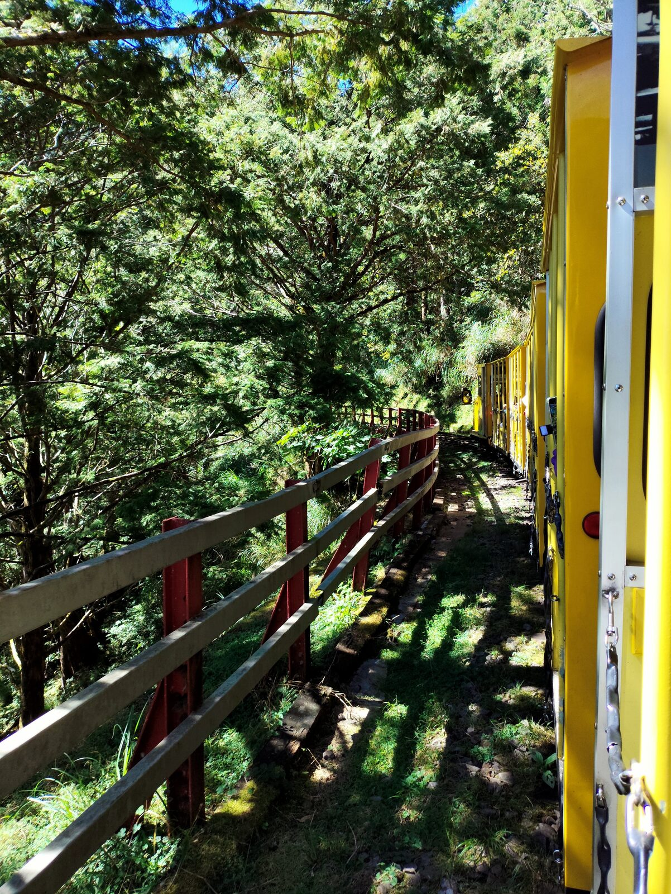
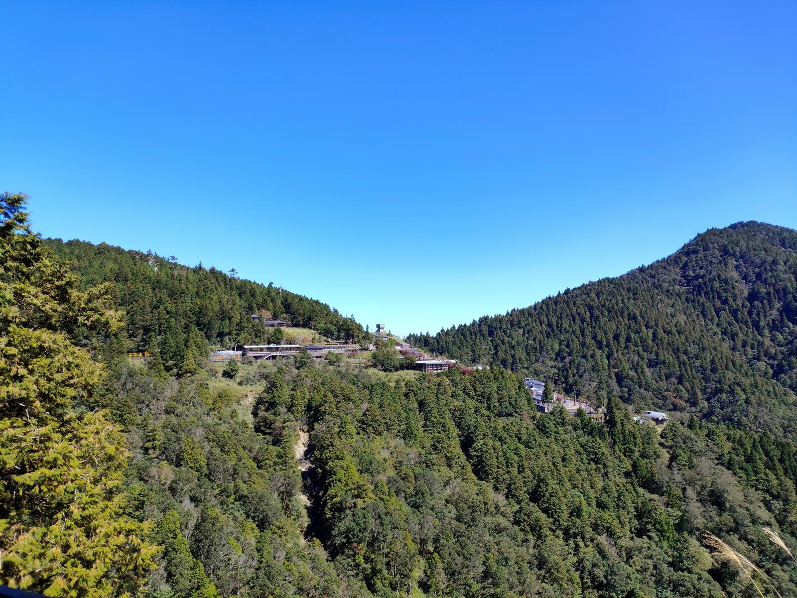
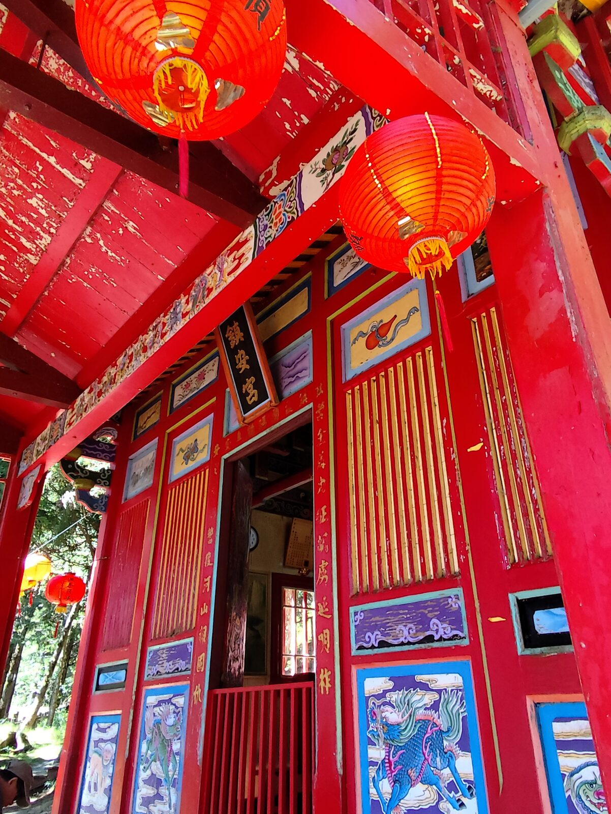
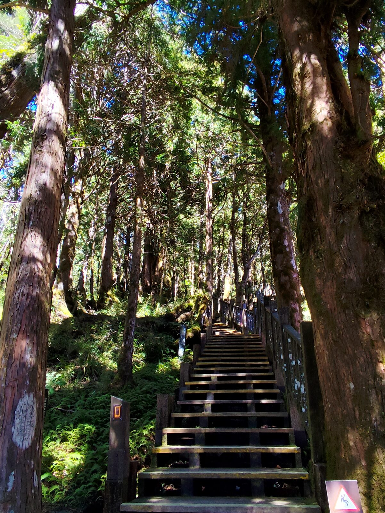
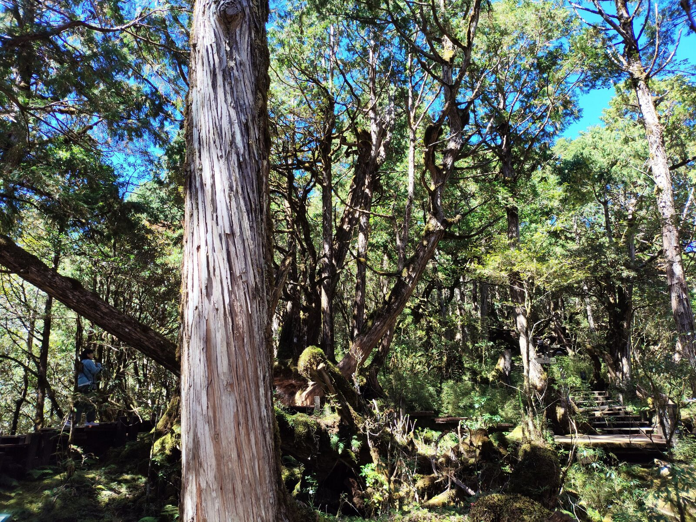
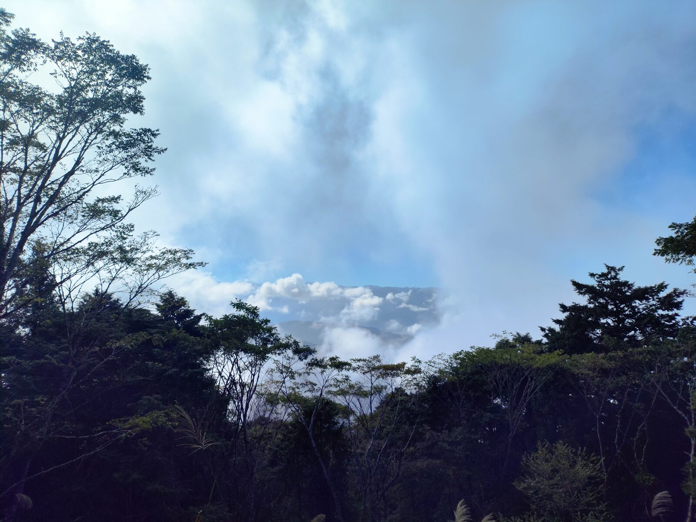

沿著太平山莊的中央階梯拾級而上，兩側是火紅的楓葉。藍天襯著紅葉，腳步一層一層往上，空氣愈來愈涼、愈來愈乾淨。這一帶海拔約 1950 公尺，光是站在階梯上，已經覺得胸口被洗過一遍。

抬頭看，楓葉幾乎把整片天空鋪成紅色。陽光從葉縫漏下來，紅得發亮。十月的太平山，把秋天收得很完整。


到森林小火車（蹦蹦車）售票處排隊，搭上黃色車廂進入林區。鐵軌聲、翠綠的森林、遠方的山影，一節一節串在一起。車窗外的樹影晃動，像有人在替你翻一本綠色的書。

從軌道上回頭望，山莊嵌在綠坡之間，建築與針葉林疊在一起。天很藍，山很靜。


回山莊後續往紅檜步道。途中的鎮安宮安撫旅人的心，也能在旁邊的涼亭歇一歇。紅燈籠、朱漆門面，和山裡的綠形成安靜的對比。再往上，是紅檜步道——木階穿過高大的樹幹，光與影在林間交錯。

再向上是鐵杉林步道。千姿百態的大樹，蒼勁有力，虯枝崢嶸；樹幹上覆著青苔，木棧道貼著根部轉彎。漫步林間，像洗了一場森林浴——呼吸變長，腳步變慢。

午後霧氣漸濃。走在觀雲步道上，涼風一陣一陣，雲霧從樹縫湧上來，把山脊與樹梢都包進去。四周忽然變白、變柔，聲音也被霧吸掉一截。
這就是世外桃源呀——不是遠在他方，而是雲霧湧來的那一刻，人站在林裡，暫時什麼都不必趕。
PLACE NOTE / 太平山
太平山國家森林遊樂區位於宜蘭大同，太平山莊海拔約 1950 公尺。園區有蹦蹦車（森林小火車）、紅檜步道、鐵杉林自然步道與觀雲步道等；楓紅季節約在秋冬。入園、車次與步道開放請以現場與官方公告為準，山區氣溫偏低，建議備外套。
文章與照片為本次旅行的個人記錄。